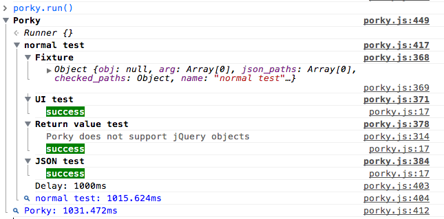
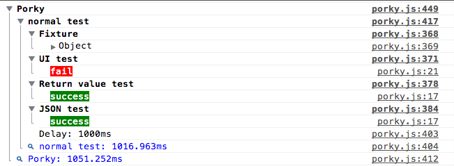

window.change = ->
$("#tryit").html("Done")
1.Register a test
On JavaScript console in Google Chrome,register as follows.
>porky.register({name:"first test",func:"change"})
2.Run tests
On JavaScript console in Google Chrome,run as follows.
>porky.run()
When you execute pokry.run,print , the results of the tests will be output on the console.

3.Change function
On JavaScript console in Google Chrome,type follows.
change = function(){}
4.Run tests
On JavaScript console in Google Chrome,run as follows.
>porky.run()
When you execute pokry.run,print , the results of the tests will be output on the console.
